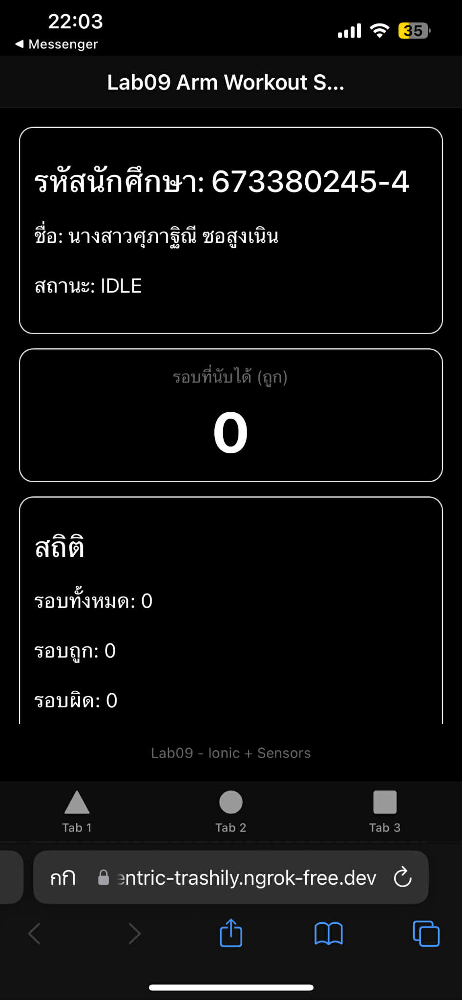
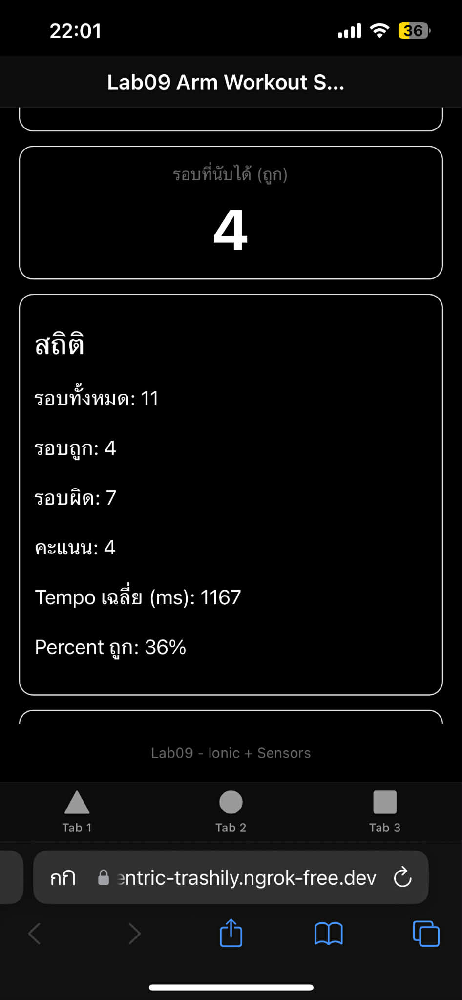

Lab09: Ionic + Mobile Phone Sensors (Arm Workout App)
รหัสนักศึกษา: 673380245-4
ชื่อ-สกุล: นางสาวศุภาฐิณี ซอสูงเนิน
ชื่อแอป: lab09-sensors
ลิงก์งาน
GitHub Project: https://github.com/suphathineeso/mobileweb
GitHub Page: https://suphathineeso.github.io/mobileweb/
สรุปการทำงานของแอป
แอปนี้เป็นแอปกายบริหารแขนโดยใช้เซนเซอร์ Accelerometer จากมือถือเพื่อตรวจจับการยกแขนขึ้น-ลง และนับจำนวนรอบแบบ rule-based (ไม่ใช้ machine learning) พร้อมแจ้งผลด้วยเสียง (TTS) และการสั่น (Haptics)
- กด Start มีเสียงพูดแนะนำการใช้งาน
- นับรอบเมื่อยกแขนขึ้นสุดและลดลงกลับแนบลำตัว
- ตรวจความถูกต้องของท่าทางจาก ROM, Tempo และแนวการเคลื่อนที่
- แสดงสถิติ: รอบทั้งหมด รอบถูก รอบผิด คะแนน Tempo เฉลี่ย และ Percent ถูก
ภาพตัวอย่างหน้าจอ App (Android)
1) หน้าเริ่ม
2) ขณะกำลังนับ

3) หน้าแสดงสถิติเมื่อจบ
วิดีโอสาธิตการใช้งาน
- แสดงการกด Start
- มีเสียงแนะนำ
- ยกแขนขึ้น-ลง และแอปนับรอบได้
- แสดงผลสถิติเมื่อจบ
หมายเหตุ : ใช้ ngrok เพื่อสร้าง Tunnel ที่รองรับ HTTPS เนื่องจากบราวเซอร์บนมือถือ (โดยเฉพาะ iPhone) จะอนุญาตให้แอปเข้าถึงข้อมูล Sensors ได้ก็ต่อเมื่อรันบน Secure Context (HTTPS) เท่านั้น การใช้ ngrok จึงช่วยให้สามารถนำโปรเจกต์จากเครื่องคอมพิวเตอร์ไปรันและทดสอบการนับรอบบนมือถือจริงๆ ได้
นักศึกษาใช้ AI ช่วยส่วนไหนบ้าง
ใช้ AI ช่วยวางโครงสร้างโค้ด แนะนำการทำ UI และอธิบาย logic การนับรอบจากเซนเซอร์ รวมถึงช่วยดู error ของ TypeScript/Ionic บางจุดค่ะ ใช้ ngrok เพื่อสร้าง Tunnel ที่รองรับ HTTPS เนื่องจากบราวเซอร์บนมือถือ (โดยเฉพาะ iPhone) จะอนุญาตให้แอปเข้าถึงข้อมูล Sensors ได้ก็ต่อเมื่อรันบน Secure Context (HTTPS) เท่านั้น การใช้ ngrok จึงช่วยให้สามารถนำโปรเจกต์จากเครื่องคอมพิวเตอร์ไปรันและทดสอบการนับรอบบนมือถือจริงๆ ได้
ส่วนใดบ้างที่นักศึกษาปรับแก้ไขเอง
ปรับเองในส่วน UI การแสดงสถิติ/ข้อความภาษาไทย และปรับค่า threshold ของการตรวจจับการยกแขน ให้เหมาะกับการใช้งาน
เปิดแอป Lab09 (ใช้งานบน iPhone)
ภาพตัวอย่างหน้าเว็บ Lab09 ใน GitHub Page